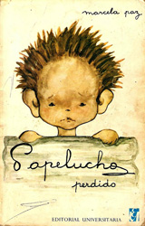

E L E V E N

个人信息
获奖经历
2015年获新生奖学金。
2014年“电信才艺杯”代表班级表演舞蹈获得冠军。
2014-2015年下半学期获二等优秀学生奖学金。
2015年学院趣味运动会4X100接力亚军。
2016年7月蓝桥杯所在小组获得全校冠军及市内二等奖。
2016年全国大学生建模大赛天津市三等奖。
2016年天津市电脑鼠大赛二等奖。
2016年电信学院“艾英语”电影电视配音大赛。
2017年获一等优秀学生奖学金。
兴趣爱好
-
篮球，大学期间在班级担任队长并3年进入半决赛，班级联赛场均15分
-
舞蹈Breaking
-
英语电影及英语口语
-
摄影与外文原著
- 
-
尊敬的老师或教授：
您好！
我是史佳易，因慕名贵校数据科学与计算机学院计算机科学与技术专业想进入贵校学习。
我对自己进行了仔细的思考和评估，本科期间我一直严格要求自己，不断的追求进步，并连年获得综合奖学金（3次）。在专业和综合方面的学习上我从来没有放松过对自己的要求。 我一次性通过国家四六级考试CET-4（550）CET-6（469），具备良好的听说读写能力，可以进行日常的沟通。到目前为止我的平均绩点为3.6，排名位于年级前10左右，虽然最喜欢的专业并不是本专业，但我并没因此就忽视本科的学习，大一时高数取得全班第一的成绩并以综合成绩年级前10获得新生奖学金，大二多门主要学科获得优良成绩，在课余时根据自己的兴趣爱好选修当代国际政治热点问题、英语翻译、摄影入门技巧等课程，其中当代国际政治热点问题结课论文被老师作为范文全班展示，其余选修课均获得满绩点的成绩，大三来担任学生助理带领大一新生，作为学生助理的我十分明白只有以身作则才能给学弟学妹们树立一个好的榜样，因此无论再忙也没有对自己的学业松懈，在选修三门课的同时两门学科主要专业课（电磁场与电磁波、半导体物理）最终取得接近满绩点的成绩，获得任课老师的认同与表扬。如今大三下学期刚结束，对于计算机专业的浓厚兴趣使我决定考取研究生修读此专业。在大一时接触到了互联网上前端技术，此后爱上了计算机与互联网，一开始通过自己不断地网上自学，一学期后已经能独自一人做出一个大型购物网站并且可以驾驭大多数页面的开发，进入大三后接触到算法，由最开始的最简单算法入门仿造2048做了一个完全一模一样的游戏（页面前端由H5完成，算法由JS写成，支持手机PC平板），其后对计算机和互联网的喜爱日益深厚，这巨大兴趣驱使我想考入贵校计算机专业进行深造。
非常感谢您能在百忙之中抽出时间阅信。冒昧致信，恳请海涵！期待能够加入您的科研团队。
祝您身体健康，工作顺利。
- 听 从 自 己 内 心 的 声 音